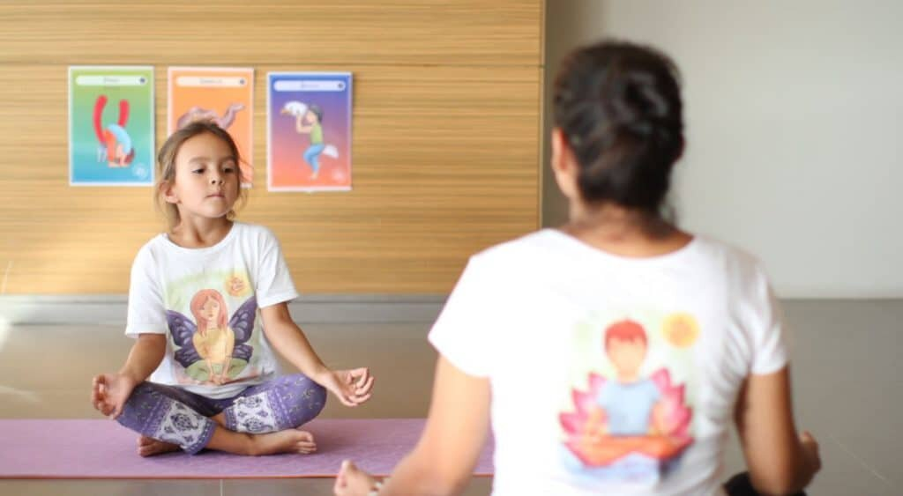

Los animales han sido fuente de inspiración para muchísimas cosas creadas por el ser humano y ahora son los protagonistas de los siguientes ejercicios de respiración para niños.
Enseñarlos usando la imaginación es una de las formas más fáciles de lograr que se diviertan, aprendan y hagan correctamente los ejercicios, ¡todo a la vez!
Respiración de conejito
Este ejercicio de respiración puede ser ejecutado en la posición de preferencia de la momia.
Con los ojos cerrados, imagina que eres un conejo oliendo el aire fresco de la pradera e inhala por la nariz 3 veces seguidas, a la vez que elevas el rostro hacia atrás un poco con cada una.
Luego, exhala por la boca todo el aire respirado. Para hacer más divertida
la actividad, puedes indicarle a los niños que se imaginen al conejito en diferentes situaciones: oliendo flores, comida o disfrutando del aire fresco.
Trompa de elefante
Comienza por ponerte de pie con las piernas separadas, los brazos al frente y las manos colgando, como una trompa de elefante. Con los ojos cerrados, inhala lentamente por la nariz, elevando los brazos a la vez que imaginamos la trompa del elefante subiendo para saludar a sus amigos, y luego exhala lentamente a la vez que bajas los brazos a la posición inicial.
La serpiente
El ejercicio perfecto para completar una sesión de respiración imaginando animales.
Se puede hacer de pie o sentados con las piernas cruzadas. Para comenzar, cierra los ojos e inhala lenta y profundamente por la nariz, mientras imaginas que eres una serpiente.
Luego exhala por la boca haciendo un sonido de “ssss”, como si de una serpiente se tratara, hasta que todo el aire salga de tus pulmones.
Dato importante: Si escoges realizar los tres ejercicios en una misma clase, no los repitas más de 3 veces cada uno. Realizar ejercicios de respiración con mucha continuidad puede marear a los niños.